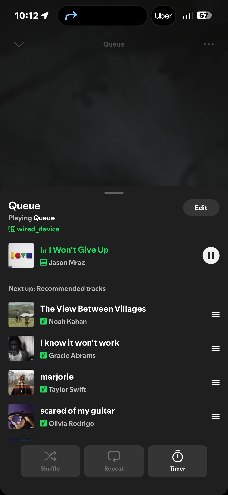
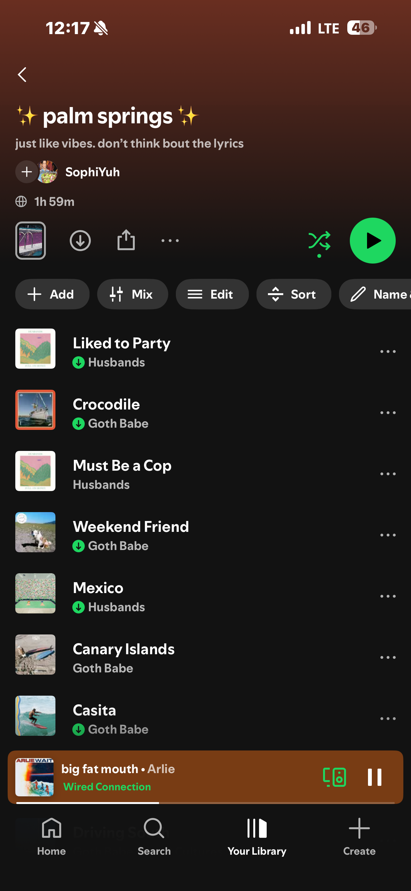

On this fine saturday morning, I used Google Maps and Apple maps to find my way to the beach for a beach clean up. I use maps every single day. I use it to fine my way home or to school, check when the bus is coming, and to see what's around me.

When I go on the bus, there really isn't much to do besides scroll on your phone or look out the window. I want to be better on my screen time, and so I usually just play a playlist on the Spotify app and listen to music and stare out the window. It's great. I love bus time.
I also film a LOT of snapchats. It is very normal in my friend group to send long videos on snapchat of our day. Any updates in our lives, something we saw, something we found funny, literally anything. I usually send about three minutes worth of videos at a time, and yes, my friends are forced to see and respond to my videos, and same from me. I realized I actually spend a lot of my time on snapchat, even though I don’t want it to be true. For some reason, we like to send videos on snapchat instead of messages, or instagram or any other video supporting app. We just chose that one and that’s the one it’s been since middle school.

This is my favorite playlist to listen to when it's a sunny day out. It's an instant mood boost. I've recently been into indie artists like Goth Babe and Husbands.
Whenever I get back from somewhere or finish something, I go on TikTok and scroll and scroll. This is my defrost time. I also scroll when im bored and I feel like i have nothing else to do… which is quote often. I alternate a lot between tiktok, instagram and snapchat.
On this particular day, I was googling Expedia a lot because I am planning a trip to Europe. I used websites like Expedia, Air bnb, kayak and more. I used messages to update my friends on certain hotel choices.
I have the medieval urge to entertain myself while I eat, and so I typed in netflix into the google search bar and I watch movies. I watch a lot of movies. I watch a movie almost every single day. It's great. I use Netflix, Hulu, HBO Max almost everyday whether it's when I eat or to have something in the background while I work or study.
I also use the facetime app a lot to talk to my friends, besides all the Snapchatting.
I also have a spam Instagram account, and so I like to take as many videos and pictures of my life as possible. I post on my spam account every sunday, and it's this little recap I like to make and share it with my friends. After a night out, I am the friend that asks for the pictures right when I get home, so my friend sent me pictures she took on her camera and I upload them to my main Instagram account story. I love posting. I love sharing.
****SUNDAY****
I started my Sunday morning by going on Expedia and Air Bnb yet again and searching for hotels, flights, etc for my upcoming trip. This is just another example of having the TV on while I surf the web on my laptop.
After burning my eyeballs off looking for hotels, I used the maps apps to go to Trader Joe's. I was in desperate need of food.
I don't only use TikTok to rot in bed. I also use it as a search engine to find helpful videos. In this case, I used it to learn how to cook salmon pinwheels. I looked through many videos and combined what I learned from all of them and made my own! It turned out yummy.
This was superbowl sunday, so I went to school to watch the halftime show with my friends in UC 4. This was also a workday though. I am the social media manager of the SF Foghorn on campus, so I was determined to make content about our first sunday layout of the year.